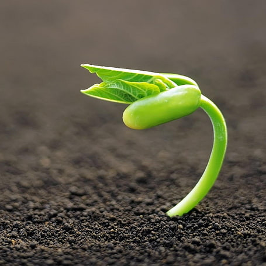

New customers enjoy a special 10% discount while the offer lasts!
Winterization Special
Let us help you prepare your garden for the winter so that it can be ready for the next season. We apply a liquid fertilizer to prepare the plant for the spring growing season.
Spring Treatment
As the winter draws to a close, we recommend applying a pre-emergent to your lawn to prevent certain types of weeds from coming back. This will allow your grass to out-compete weeds.
Summer Care
Believe it or not, plants need upkeep during the peak growing season, especially if it is very hot and stressful to the plant. Our specialists will ensure your landscape is in the best shape.